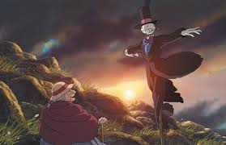
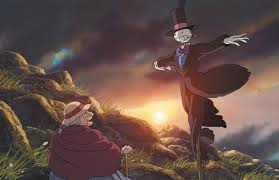

O Castelo Animado é um filme de animação japonês lançado em 2004, dirigido por Hayao Miyazaki e produzido pelo Studio Ghibli. Baseado no livro homônimo da escritora britânica Diana Wynne Jones, o longa mistura fantasia, magia e crítica social em uma narrativa encantadora. A história acompanha Sophie, uma jovem modista que é transformada em uma idosa por uma bruxa e acaba encontrando refúgio no misterioso castelo ambulante de Howl, um poderoso e excêntrico mago. A partir daí, inicia-se uma jornada repleta de autoconhecimento, coragem e empatia.
A construção visual do filme é um dos elementos mais marcantes. O castelo, que se move por meio de pernas metálicas e emite sons mecânicos, simboliza não só a instabilidade emocional de Howl, mas também o caráter mutável da vida. Cada cômodo do castelo revela uma faceta do personagem, refletindo suas contradições e medos. A estética detalhista do Studio Ghibli impressiona pelo cuidado com cenários, figurinos e expressões faciais, contribuindo para uma imersão completa no universo fantástico da obra.
Os personagens de O Castelo Animado são complexos e multifacetados. Sophie, que começa como uma jovem insegura e resignada, se transforma gradativamente em uma mulher determinada e compassiva, mesmo após a maldição que a envelhece. Howl, por sua vez, é um mago que foge das responsabilidades e da guerra, mas aos poucos se revela generoso e comprometido com aqueles que ama. A relação entre os dois é construída com sutileza e profundidade, fugindo de clichês e priorizando o amadurecimento emocional mútuo.
A crítica social presente no filme também merece destaque. Miyazaki, conhecido por seu posicionamento pacifista, insere uma dura reflexão sobre os horrores da guerra, o uso da tecnologia para fins destrutivos e a perda da inocência. Em O Castelo Animado, os conflitos armados não têm vencedores claros e são mostrados como absurdos, sem sentido e devastadores. A magia, que poderia ser um instrumento de transformação, é usada tanto para proteger quanto para destruir, revelando as dualidades do poder.
A trilha sonora, composta por Joe Hisaishi, complementa com perfeição a atmosfera do filme. As melodias suaves e emocionantes acompanham os momentos mais intensos da narrativa e ajudam a criar conexões profundas com os personagens. A música principal, “Merry-Go-Round of Life”, tornou-se um clássico entre os fãs de animações e é frequentemente associada ao sentimento de esperança e renovação que permeia a história.
Em resumo, O Castelo Animado é muito mais do que uma aventura mágica. É uma obra que convida à reflexão sobre identidade, amor, envelhecimento e resistência frente à opressão. Com sua estética inconfundível, personagens marcantes e mensagens atemporais, o filme continua encantando espectadores de todas as idades ao redor do mundo. Sem dúvida, é um dos maiores legados do cinema de animação e um exemplo do poder narrativo do Studio Ghibli.
 
